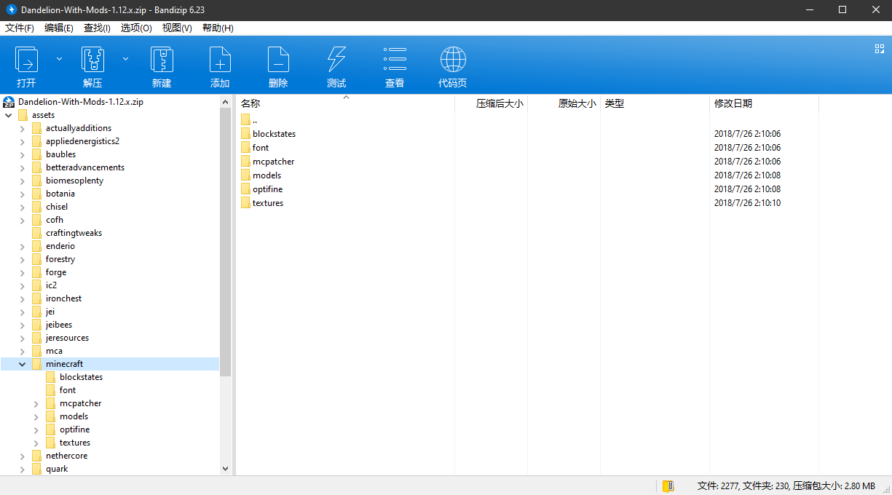
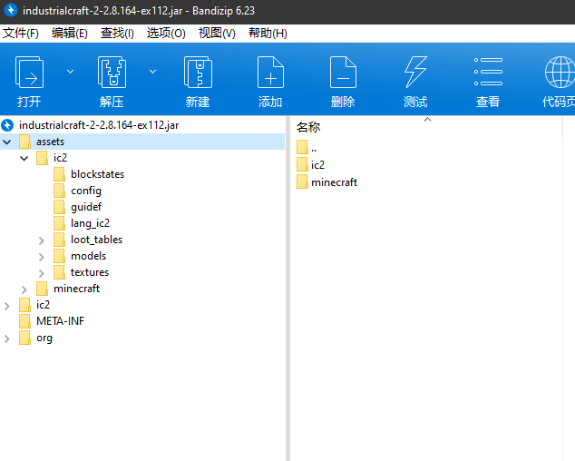
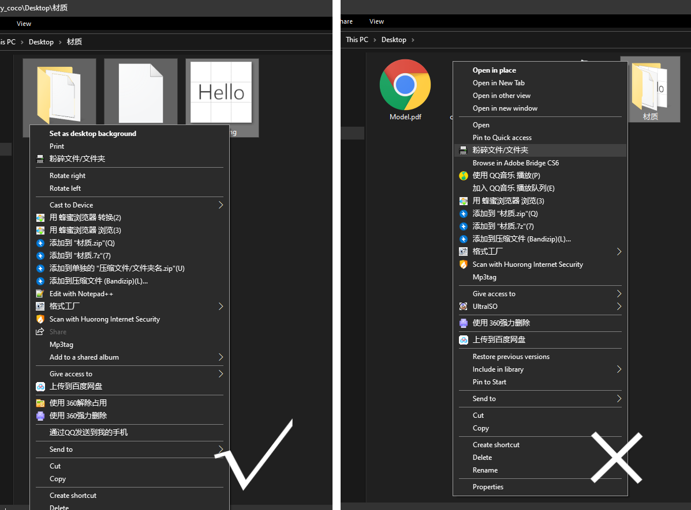

第三节 认识资源包
资源包结构
以 1.11.2 版本为例。首先创建一个文件夹。打开 1.11.2.jar 核心文件，我们可以看到名为 assets 的文件夹。把 assets 复制到我们新建的文件夹里，assets 内包含了大部分可修改的游戏贴图，但并不完全。下面来介绍一下材质包的文件目录。
\材质包
pack.png
\assets
\minecraft
\blockstates
\models
\textures
\blocks 方块材质
\entity 实体材质
\environment 日月、雨雪材质
\gui 用户界面材质
\items 物品材质
\map 地图界面材质
\models 盔甲材质
\painting 画材质
\particle 粒子材质
\......
\......
pack.mcmeta
assets/minecraft 目录下的文件都包含了原版游戏的大部分内容，例如 blockstates和 models 和模型有关，text 和游戏的文本有关。而游戏的贴图文件都存在 textures 文件夹中。
但同时我们发现，材质包目录下除了 assets 文 件夹，还有 pack.png 和 pack.mcmeta。pack.png 是材质包的图标。重点是 pack.mcmeta ，这个文件在游戏 jar 文件内找不到，你可以新建一个 txt 文档，将 新建文本文档.txt 改成 pack.mcmeta，再用可以处理文本文件的应用打开。这个文件内的基本内容是这样的。
{ "pack": { "pack_format": 4, "description": "123456ABC" } }
pack_format 后的数值代表这个资源包适用的版本。1.8.9及以前版本填1，1.9至1.10.2填2，1.11至1.12.2填3，1.13至1.14.4填4，1.15及以后填5。
description 后的引号内是资源包的介绍，介绍会在选择资源包时出现在资源包名称的下方。
如何修改原版音效
难点：1. 找到原版的音频文件 2. 根据 indexes 下各版本的 json 文件所写的内容修改资源包的音频文件
游戏能读取 .ogg 格式的音频，如果你做好了一个音效，但它是 mp3 或其它格式，你可以用格式工厂转码。
我们打开某个版本的jar文件，我们并不能找到任何音频文件。音频文件储存在游戏根目录 .minecraft\assets\object\下的各个文件夹里，但是 object 下的文件夹没有按一定的规律命名，且这里面保存的不仅仅有音频文件，许多游戏项目文件也包含其中。以1.12版本为例，我们想要找到打开箱子音效的音频文件，我们应该在游戏根目录 .minecraft\assets\indexes 下找到对应的版本的 json。打开1.12.json，利用查找箱子的英文名 chest 或者其它方法，我们可以查找到以下部分
"minecraft/sounds/block/chest/close.ogg": {"hash": "a7d0d6f761c9a647cc0273bc016f2772b85f6d88", "size": 7590},
"minecraft/sounds/block/chest/close2.ogg": {"hash": "eaa2cfc2ca71f219930cc496d5316853364d3623", "size": 7896},
"minecraft/sounds/block/chest/close3.ogg": {"hash": "fda6f8d1f1daabad0fd78903cd3c4b366f77a8e5", "size": 7116},
"minecraft/sounds/block/chest/open.ogg": {"hash": "f993dbcc8cdde669020b9f988f091d997006ce8b", "size": 8916},
最下面，我们可以看到 chest/open.ogg 字样。这时我们复制hash后面引号内的内容，也就是f99....8b，再进入到 assets/object 里查找，我们就可以找到这样的文件

这个文件没有后缀名。当我们加上 .ogg 后缀名后播放，我们就可以听到箱子打开的音效。
下面是一个利用资源包修改原版音效的实例。以1.12版本为例，我们现在已经有一个名为 1.ogg 的音频文件，打开后可以听到“叮咚”的声音，我们想用这个替换原版拾取经验球的声音。
回到 assets/indexes 文件夹里，打开 1.12.json，查找orb（经验球）（举一反三，如果你想修改僵尸的音效可以查找zombie），可以看到这一行
"minecraft/sounds/random/orb.ogg": {"hash": "e9833a1512b57bcf88ac4fdcc8df4e5a7e9d701d", "size": 7139},
可以看到，如果想修改拾取经验球的音效，我们应该在我们材质包的 assets/minecraft 目录下，新建一个 sounds 文件夹，再在 sounds下新建一个 random 文件夹。把我们已准备好的 1.ogg 文件名改成 orb.ogg ，并复制到 random 里。
如何修改Mod的材质
相信这部分对许多Mod服的服主有帮助。
我们有时可以看到一些材质包，使用之后可以使 Mod 里的贴图变动。这里我们可以找个支持 Mod 材质的材质包研究一下，这里我找到了 Dandelion。

可以看到，像这种支持 Mod 的材质，assets 下的文件夹不仅仅只有 minecraft，还有像 appliedenergistics2（应用能源2），botania（植物魔法）等文件夹。对此，我们可以把 minecraft 也理解为一个 mod，而 assets 文件夹下就包含了所有 Mod 的材质贴图等，并且各个文件夹都代表了一个 Mod。
打个比方，如果我们想修改IC2（工业2）的部分材质，我会下载一个ic2模组，打开 jar 文件

再把jar文件内，assets 下的ic2文件夹整个复制到自己材质包的 assets 下，ic2的材质贴图都在 textures 下，所以 assets/ic2 下只需留一个 textures 就行了，其余删去。
材质的打包
材质基本都需要打包才可在互联网间互相传播分发。这作为一个点，并不是说这个很难，因为这很容易出错。
打包材质为 zip 压缩包文件，我们应该选 中assets 文件夹、pack.png 和 pack.mcmeta 后右键添加至压缩包，而非在上一级将材质的一个文件夹打包。

贴图处理
默认材质像素是 16x16，当然也有 32x32 64x64 128x128 256x256 512x512以 及更高像素的材质，高清像素需使用第三方 Mods 才可运行，最为常见的高清材质补丁为 Optifine HD。
材质是如何做出来的
材质的制作并非是一件容易的事情，首先材质包中众多材质对工作量也是一项挑战，需要你有足够多的耐心才能够完成，并有相关领域的研究，比如色彩，阴影，材质的衔接等。建议在原材质包的基础上替换更换自己制作的材质，以达到材质文件名的一致。
制作材质有很多种软件可以使用，最为大众所熟知的是 Photoshop，当然 paint.net 也很好用。但切记别用 Windows 的画图软件，它无法处理带透明度的图像。

推荐教程：https://www.mcbbs.net/thread-544987-1-1.html
Minecraft Wiki：https://wiki.biligame.com/mc/%E8%B5%84%E6%BA%90%E5%8C%85